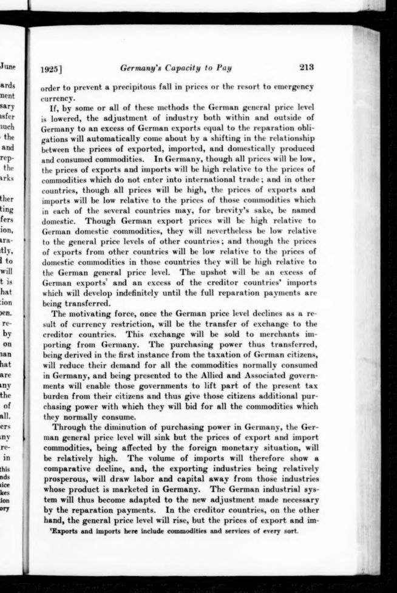

Wolfe, 1925: a demanda e a poupança desenhadas em três dimensões
Leitura: 9 min
A. B. Wolfe propõe substituir a curva de demanda plana dos manuais por um sólido formado pelas curvas de cada comprador e aplica a mesma ideia à oferta de poupança e à taxa de juros.


Wolfe sugere que um dos diagramas de seu artigo poderia ser facilmente talhado num bloco de madeira e dissecado para fins de exposição. Se a peça teria mais utilidade que um jogo de palavras cruzadas, escreve, fica a juízo do leitor. A ironia resume o tom do texto de A. B. Wolfe, da Ohio State University, publicado no número de junho de 1925 da American Economic Review: uma proposta didática para ilustrar a teoria da demanda e dos juros, feita por um autor que desconfia das premissas psicológicas dessa mesma teoria.
Por que desconfiar da curva de demanda?
O artigo começa duvidando que as análises da demanda baseadas na utilidade decrescente e marginal, que ele chama de trabalhosas, intrincadas e ao mesmo tempo simplificadas demais, mantenham na economia realista do futuro o lugar que tiveram nos tratados ingleses e americanos desde Jevons. A principal objeção é a de Veblen e de outros economistas institucionalistas: esses conceitos pressupõem, como fato da psicologia humana, um hedonismo sempre presente, consciente e calculista, que não desempenha o papel que a economia benthamiana lhe atribuiu.
Substituir a utilidade por noções mais objetivas, como a “vendibilidade” da terceira edição dos Principles de Taussig ou as “ofertas de preço” de Davenport, não resolve, segundo Wolfe. Ao contrário, agrava a objeção, porque passa a ser preciso supor que cada comprador analisa com exatidão meticulosa as satisfações alternativas e, além disso, conhece o valor subjetivo exato de seu dinheiro. Ainda assim, o método das tabelas e curvas hipotéticas é tão conveniente que deve continuar nos manuais, desde que acompanhado de uma confissão clara de que se trata de filosofar “como se”, e não de uma indicação realista do que acontece no mercado.
“Pode não causar grande dano, desde que acompanhado de uma confissão clara de que é uma espécie de filosofar ‘als ob’.” (it may do no great harm, provided it be accompanied by a clear confession that it is a sort of als ob philosophizing)
Que leituras a curva plana permite?
O ponto de partida é um artigo de Silberling publicado na revista em setembro de 1924, “Graphic Illustration of the Laws of Price”. Silberling mostrara que a curva DD’ conhecida é composta, hipotética e atemporal, e que lê-la como queda da demanda ao longo do tempo pode ser um erro. Wolfe não pretende criticar essas conclusões, mas argumentar que o assunto ganharia clareza se fosse apresentado desde o início com diagramas tridimensionais, como os que Silberling só introduz no fim.
A curva em duas dimensões, diz, presta-se a interpretações diferentes. Numa, representa as atitudes sucessivas de um indivíduo diante de unidades adicionais de um bem: a utilidade marginal ou vendibilidade de cada quantidade para ele. Noutra, menos usada mas legítima, a quantidade é dada e o eixo horizontal enfileira compradores diferentes pela intensidade de sua demanda. E há a curva de “demanda social”, soma das tabelas individuais. Nesta, o preço de equilíbrio é ao mesmo tempo o preço da única unidade do comprador marginal e o preço da unidade marginal de cada comprador intramarginal, uma dupla leitura que o autor considera incômoda numa só curva.
Nenhum diagrama plano, conclui, mostra de uma vez que a utilidade diminui para cada indivíduo à medida que a oferta cresce e que uma mesma quantidade tem utilidades diferentes para pessoas diferentes. Para isso, é preciso um terceiro eixo.
Como é o sólido da demanda?
O diagrama da figura 2 é um maço de curvas individuais de demanda, uma atrás da outra. Wolfe o compara ao segundo diagrama da renda da terra dos Materials for the Study of Elementary Economics, de Marshall, Wright e Field: a curva de demanda individual é análoga à curva de rendimentos decrescentes de um terreno cultivado intensivamente, porque doses sucessivas de um bem trazem cada vez menos satisfação, assim como doses sucessivas de trabalho e capital trazem cada vez menos produto. Em nenhum dos dois casos, lembra, pode entrar o tempo.
A analogia tem um limite. No diagrama da renda, a base triangular é teoricamente correta: a melhor terra recebe o cultivo mais intenso. No da utilidade, não é necessariamente verdade que o comprador mais rico leve mais unidades a um preço moderado; a quantidade de cada um depende da natureza do bem, da elasticidade da demanda em cada classe de compradores e da distribuição do poder de compra em relação aos padrões de vida. A base fica triangular só por simplicidade. Nela, o comprador mais rico e mais desejoso leva muito ao preço de mercado, os seguintes levam menos e o comprador marginal leva uma unidade.
Para os compradores mais pobres, o preço pesa muito; para os opulentos, pouco. Por isso Wolfe julga provavelmente correto desenhar convexas as curvas individuais dos ricos e côncavas as dos pobres. Cada curva começa mais baixa que a do vizinho mais abastado, e a linha que une os pontos de partida é a curva das ofertas iniciais de preço, cuja inclinação indica quanto o preço precisa cair para trazer ao mercado compradores menos ávidos. A figura 3 trata de um bem que ricos e pobres compram pouco e a classe média compra muito; aí a linha que une as quantidades compradas ao preço de equilíbrio vira uma curva.
Um plano vertical paralelo ao de referência, a uma distância OL, corta as curvas individuais e dá a curva dos preços que cada comprador pagaria por uma quantidade OL se não pudesse obtê-la por menos. Wolfe ressalva que as notações sobre utilidade total e excedente do consumidor não o comprometem com esses conceitos como realidades mensuráveis. E lembra que tudo isso é demanda estática, um instantâneo da psicologia da demanda, sob a hipótese hedonista, num dado momento. Para mostrar deslocamentos no tempo, Silberling usa outro tipo de sólido, em que um eixo horizontal mede a quantidade e o outro, o tempo.
E a taxa de juros?
A aplicação que o autor diz ter achado mais útil é a análise dos juros e do excedente dos poupadores, sob a hipótese de que ao menos parte da poupança envolve um custo de sacrifício, chame-se abstinência, espera ou impaciência. O diagrama é análogo ao primeiro da renda da terra nos mesmos Materials, e as curvas de custo de poupar correspondem às curvas de custo de produção: trata-se agora da oferta, não da demanda. Cada indivíduo tem uma tabela de quantos dólares pouparia a cada taxa de juros; as curvas formam outra cunha, ordenada pela taxa necessária para que cada um poupe alguma coisa.
O poupador marginal fica na ponta da cunha. Poupa uma só unidade, uma libra ou cem dólares, à taxa de equilíbrio, digamos 3 por cento, e não tem excedente, porque os juros apenas compensam seu sacrifício. Na outra ponta está o maior poupador, para quem boa parte do que poupa é automática e sem custo; Wolfe remete a seu artigo sobre o excedente do poupador no Quarterly Journal of Economics de novembro de 1920. Das pessoas ricas às pobres, o sacrifício da primeira unidade poupada cresce, formando a curva dos sacrifícios iniciais. As curvas de custo são desenhadas côncavas para os ricos e convexas para os pobres.
Os diagramas permitem mostrar o efeito de uma redução da taxa de juros de 3 para 2 por cento. Um plano horizontal mais baixo corta as curvas individuais e a curva dos sacrifícios iniciais; os poupadores cujo sacrifício inicial supera o que 2 por cento compensam deixam de poupar, e a área projetada na base mostra a poupança perdida.
Por isso Wolfe considera o diagrama em escala impraticável. E desaconselha o uso desses sólidos em turmas elementares, mesmo por professores que aceitem sem questionar a teoria da abstinência; diz tê-los achado úteis em cursos avançados de teoria.
Na minha leitura
Na minha leitura, o artigo mostra um economista que usa as ferramentas da teoria marginalista enquanto registra as objeções institucionalistas a elas. Wolfe trata os diagramas como instrumentos de exposição, não como descrição do mercado, e isso aparece na insistência em que utilidade total e excedente não sejam tomados como grandezas mensuráveis.
O texto também é um documento sobre distribuição. Nos dois sólidos, o eixo que os diagramas planos escondem é o da diferença entre ricos e pobres: quem compra quanto ao mesmo preço e quem poupa sem sacrifício. A forma da base, que o autor deixa em aberto, depende da distribuição do poder de compra, e o diagrama em escala real esbarra justamente na desigualdade entre os maiores poupadores e os da margem.
Glossário
- Utilidade marginal
- satisfação adicional dada pela última unidade consumida de um bem.
- Excedente do consumidor
- diferença entre o que o comprador pagaria por uma quantidade e o que efetivamente paga.
- Excedente do poupador
- diferença entre os juros recebidos e o sacrifício que o poupador teria aceitado por poupar a mesma quantia.
- Teoria da abstinência
- explicação dos juros como pagamento pelo sacrifício de adiar o consumo.
- Als ob
- “como se”, em alemão; raciocínio que trata uma hipótese como se fosse verdadeira para fins de análise.
Fontes
- Three-Dimensional Diagrams in Illustration of Consumers’ Demand and of Interest Rates and Savers’ Surpluses — A. B. Wolfe (Ohio State University) (pp. 228–238). Internet Archive (número completo, PDF)
- Edição completa, com os demais artigos: Nº 191 do Arquivo.
Documento em domínio público (EUA, publicado antes de 1931), via JSTOR Early Journal Content e Internet Archive. Resumo e comentário do autor deste site, sem afiliação com a American Economic Association. Encontrou um erro? Escreva: a correção é publicada no próprio texto, com data.
← Graham, 1925: as reparações alemãs e a transferência como problema de preços ↑ Nº 191 · As reparações alemãs, a definição de renda e a crítica ao behaviorismo Hewett, 1925: a poupança entra na renda? →